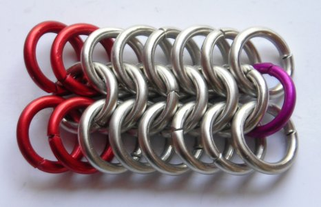
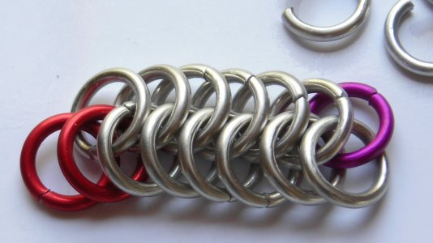
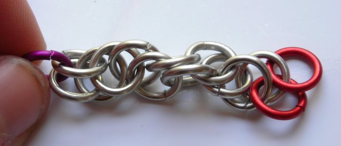
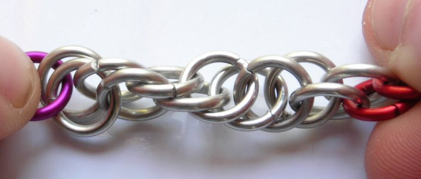
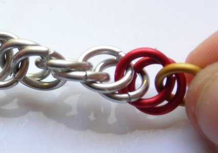
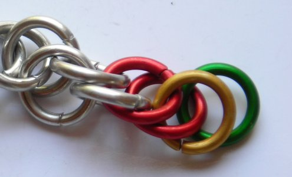
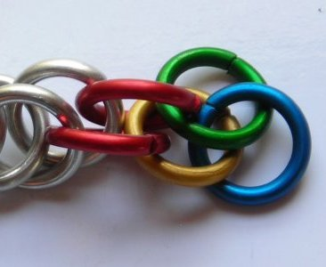
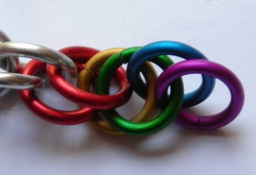

Constructing Spiral 3:1
European 6:1 as a starting point
This is weave is almost identical to Spiral 4:1, but each ring only passes through three others. Because of this, it is slightly less stable, and therefore a bit trickier to work with. In this tutorial, I will demostrate how to build Spiral 3:1 by deconstructing European 6:1, which bypasses any mess and confusion in starting Spiral 3:1 as itself.The rings in this tutorial are 16 ga 1/4". I wouldn't use any smaller AR, but you could go quite a bit larger.
1. To start, make a ribbon of E6:1, three rows wide, as long as you like it. Pay attention to how many rings you have on either end. Notice how the ribbon below has two extra rings on each outside edge on the left side (the red ones), and one extra ring in the middle on the right side (the violet one). This is important if the next couple of steps are going to make sense.

2. Remove all the links from the top row. Don’t worry too much about the weave losing its shape as you do this; that is the eventual goal anyway. You’ll just be doing the next step a little early.

3. Now, grab the chain by the violet link, and pick the whole thing up. It will totally loose its prior form, but that is a GOOD thing. You want it to do that so you can get Spiral; the original weave was just a way to get the links connected in the right way.

4. You don’t have to add anything in this step. See the two red links? Hold onto those as well as the violet one on the other end of the chain, and rotate the violet link toward you. Continue turning it until you can’t turn it anymore without the weave bunching up. See how the edge spirals now?

5. Now we're going to add to the chain. Add a link (yellow) through the two red links on the right end (the same ones that you dealt with in step 4).

6. Now add another link (green). This will only pass through one other link for now. Place it behind the yellow link, passing it through the second of the two red links. Getting nice and colorful, isn't it?

7. Well that’s all there is to it; just repeat the last two steps to continue lengthening, treating the yellow and green links as red ones and adding on to those in the same manner as before.
 
Good luck!